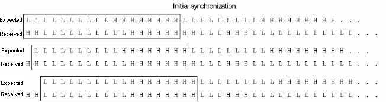

Startup latency and initial synchronization
Initial synchronization serves to overcome an initial latency and to discover the start of the meaningful data. Its basic idea is to compare the received data, as selected by the tracking mechanism, successively with a start segment of the expected data, the synchronization pattern, until a segment of the received data matches this synchronization pattern. The start of this segment is assumed to be the start of the meaningful data.
The step width of the successive comparisons is one data bit. This means that if the length of the synchronization pattern is n, and the first n received bits do not match it, then bit 2 through n+1 will be compared next, and so on, until a match is found.
In order to prevent that a match is found too early, that is, before meaningful data appear at the output, care must be taken to make the synchronization pattern unique. It may be feasible to create a special sequence which precedes the actual device test and only serves to secure synchronization of the received with the expected data stream.
The length of the synchronization pattern depends on the token size (see Skipping idle tokens):
- If the token size is 0, that is, no token is defined, the length of the synchronization pattern will be 24 bit, that is, 4 vectors in x6-mode, or 6 vectors in x4-mode.
- If the token size is 8, 9, or 10 bit, the length will be 2 tokens. Note that this implies that no idle token must occur between the first two payload tokens in the received data.
- If the token size is greater than 10, the synchronization pattern will have the length of one token.
The received data cannot only be synchronized at test start, but also every time a bi-directional pin switches from drive to receive mode. Synchronization can be switched off and on with the FIRST_INITIAL_SYNC_MODE and SUBSEQUENT_INITIAL_SYNC_MODE properties of the TTCF command.
Initial synchronization can also be used to compensate for a BC transition at test start, or after a bi-directional pin has switched from input to output mode. For details see Positioning the first observation window and jump by 2.
Related Test Method APIs
firstInitialSyncMode() and subsequentInitialSyncMode() functions of the TRANSITION_TEST_PINS API
Example

In this example, the token length is 9. Therefore the synchronization pattern has length 18, consisting of two tokens. Two steps are needed for synchronization.
Functional changes
- Introduced in SmarTest 7.0.1